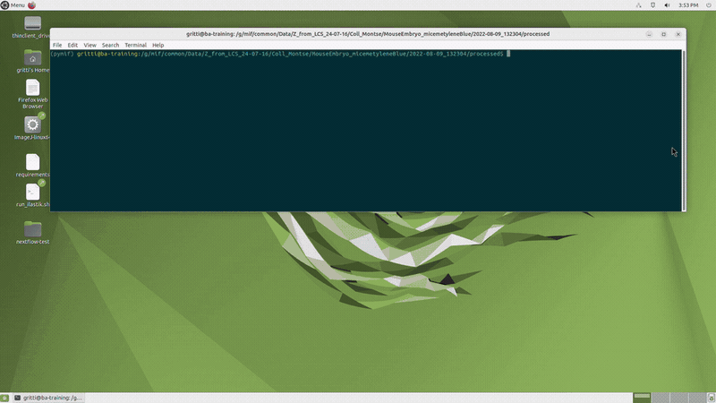
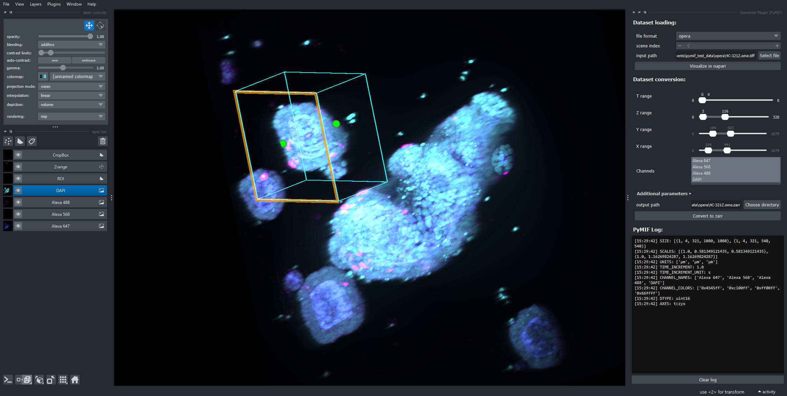

PyMIF — microscopy I/O, OME-Zarr conversion, and NGFF utilities
PyMIF is a Python package for reading microscopy datasets from multiple acquisition systems, building multiscale pyramids, writing OME-NGFF / OME-Zarr, and interacting with those datasets from Python, the command line, and napari.
It is developed for users of the Mesoscopic Imaging Facility (MIF), but the repository now covers a broader scope than simple vendor import: it includes a reusable manager API, NGFF-aware zarr creation utilities, region writing for images and labels, batch conversion helpers, and napari widgets for conversion and overview generation.
For the rendered docs, see the documentation page.
[!NOTE] Current PyMIF releases write NGFF v0.5 / Zarr v3 by default. Existing NGFF v0.4 / Zarr v2 datasets remain supported through
ZarrManagerandZarrV04Manager.

Demonstration of PyMIF usage. Data: near newborn mouse embryo (~1.5 cm long). Fluorescence signal: methylene blue + autofluorescence. Sample processed and imaged by Montserrat Coll at the Mesoscopic Imaging Facility. Video speed: 2.5× real speed.
Current repository scope
PyMIF currently contains five main pieces:
Microscope managers for reading datasets and normalizing them to a common API.
OME-Zarr / NGFF writing utilities for full dataset export, empty dataset creation, subgroup creation, and region updates.
Pyramid and subsetting helpers for multiscale generation and dataset cropping.
CLI tools for one-off and batch conversion to zarr.
Napari widgets for interactive conversion, ROI selection, and overview generation.
Supported data sources
The main reader classes currently exposed by pymif.microscope_manager are:
ArrayManager— wrap an in-memory NumPy or Dask array using PyMIF metadata conventions.LuxendoManager— Luxendo XML + HDF5 datasets.OperaManager— Opera Phenix / Opera PE OME-TIFF style datasets.ScapeManager— Leica SCAPE OME-TIFF + XLIF datasets.ViventisManager— Viventis LS1 datasets.ZeissManager— Zeiss CZI datasets.ZarrManager— NGFF v0.4/v0.5 OME-Zarr datasets.ZarrV04Manager— compatibility reader for older v0.4-style datasets.
All file-based readers share the same conventions:
The dataset location is the first argument (
path; forScapeManagerthe OME-TIFF file) andchunksis an optional TCZYX tuple. When omitted,chunksdefaults to the manager’sDEFAULT_CHUNKS((1, 1, 8, 4096, 4096)for most readers,(1, 1, 8, 1024, 1024)forScapeManager, the native chunking forZeissManager).The dataset is read in the constructor, so
.data(one lazy dask array per pyramid level) and.metadataare available immediately.read()returnsNone.Managers can be used as context managers, which closes any open file handle (HDF5 files for
LuxendoManager) on exit:with mm.LuxendoManager("path/to/luxendo_folder") as lux: lux.to_zarr("output.zarr")
The metadata uses one spelling everywhere: channel colors are
RRGGBBhex strings (no#), spatial units are NGFF names such as"micrometer", and time units are e.g."second".Progress messages (opened scenes, subsets, metadata updates, the Zarr tree printed when opening a store) go through the standard
loggingmodule under the"pymif"logger and are silent by default. Show them with:import logging logging.basicConfig(format="%(message)s") logging.getLogger("pymif").setLevel(logging.INFO)
Core capabilities
Read vendor-specific microscopy metadata into a shared metadata schema.
Represent image data lazily with Dask.
Build multiscale pyramids from a base-resolution dataset.
Write OME-Zarr in NGFF v0.4/Zarr v2 or NGFF v0.5/Zarr v3 form.
Create empty image groups and label groups inside an existing zarr hierarchy, including 2D/3D/4D/5D axis-aware zarr datasets.
Write image patches or label patches back into an existing zarr dataset.
Visualize datasets in napari.
Convert single datasets or CSV-defined batches from the CLI.
Installation
A clean conda environment is recommended:
conda create -n pymif python=3.12
conda activate pymif
Then install from the repository:
git clone https://github.com/grinic/pymif.git
cd pymif
pip install .
For development work:
pip install -e .
To use the napari widgets as well:
pip install -e .[napari]
Quick usage
Python API
import pymif.microscope_manager as mm
# Read a source dataset
source = mm.ViventisManager("path/to/Position_1")
# Build a pyramid in memory
source.build_pyramid(num_levels=3)
# Export to OME-Zarr (default: NGFF v0.5 / zarr v3)
source.to_zarr("output.zarr")
# Re-open the written zarr dataset
z = mm.ZarrManager("output.zarr")
viewer = z.visualize(start_level=0, in_memory=False)
Create an empty zarr dataset from metadata
import pymif.microscope_manager as mm
z = mm.ZarrManager(
"empty.zarr",
mode="a",
metadata={
"size": [(1, 2, 16, 256, 256)],
"chunksize": [(1, 1, 16, 128, 128)],
"scales": [(2.0, 0.5, 0.5)],
"units": ("micrometer", "micrometer", "micrometer"),
"axes": "tczyx",
"channel_names": ["GFP", "RFP"],
"channel_colors": ["00FF00", "FF0000"],
"time_increment": 1.0,
"time_increment_unit": "second",
"dtype": "uint16",
},
)
Axis-aware ZarrManager metadata
Most microscope-specific managers still normalize data to legacy tczyx, but ZarrManager and ArrayManager can now write and read any unique subset of the image axes t, c, z, y, and x. The axes string must have one label per array dimension and may not contain non-image axes such as tiles, ROIs, scenes, or wells.
For example, a two-dimensional YX intensity image can be written as:
import dask.array as da
import numpy as np
import pymif.microscope_manager as mm
img = np.zeros((512, 512), dtype=np.uint16)
levels = [da.from_array(img, chunks=(256, 256))]
metadata = {
"axes": "yx",
"size": [(512, 512)],
"chunksize": [(256, 256)],
"scales": [(0.5, 0.5)], # follows the spatial axes in axes order
"units": ("micrometer", "micrometer"),
"dtype": "uint16",
"data_type": "intensity", # or "label"
}
mm.ArrayManager(levels, metadata).to_zarr("yx_image.zarr")
Use data_type="label" for segmentation, mask, or annotation data. Label arrays must use an integer dtype. For NGFF v0.5/Zarr v3, PyMIF stores the semantic type under attrs["ome"]["data_type"], writes array-level dimension_names, writes multiscales[0]["type"] = "label", and adds image-label metadata. For NGFF v0.4/Zarr v2, the equivalent metadata is stored directly on the group attributes.
Legacy calls that create labels from an intensity image metadata dictionary still work:
z = mm.ZarrManager("image.zarr", mode="a")
z.create_empty_group("nuclei", image_metadata, is_label=True)
When image_metadata["axes"] == "tczyx", this legacy is_label=True form creates a tzyx label group by dropping the intensity channel axis. New callers that really want channelled label data can pass explicit label metadata instead:
label_metadata = {**image_metadata, "data_type": "label"}
z.create_empty_group("classes", label_metadata, data_type="label")
Update a region in an existing zarr image
import numpy as np
import pymif.microscope_manager as mm
z = mm.ZarrManager("output.zarr", mode="a")
patch = np.full((1, 1, 2, 64, 64), 999, dtype=np.uint16)
z.write_image_region(
patch,
t=slice(0, 1),
c=slice(0, 1),
z=slice(10, 12),
y=slice(100, 164),
x=slice(100, 164),
level=0,
)
Examples
The examples/ directory includes axis-aware zarr examples:
examples/example_zarrmanager_axis_aware.py— script showing YX intensity writing, YX label metadata, subsetting, and empty label-group creation.examples/example_zarrmanager_axis_aware.ipynb— notebook version of the same workflow.
CLI
Single conversion:
pymif 2zarr -i INPUT_PATH -m MICROSCOPE -z OUTPUT_ZARR
Batch conversion from a CSV manifest:
pymif batch2zarr -i INPUT_FILE.csv
Get help:
pymif -h
pymif 2zarr -h
pymif batch2zarr -h
Napari plugin
PyMIF provides napari widgets for conversion and overview generation. After installing the napari extras, the conversion widget is available from:
Plugins > PyMIF > Converter Plugin
The widget can load data, preview channels, define a 3D ROI, restrict z/time/channel ranges, choose pyramid settings, and export to OME-Zarr. For axis-aware zarr datasets, controls tied to missing axes are disabled; for example, a dataset with axes="yx" has no active T slider or channel selector.
The widgets are built to be docked on any side of the napari window, or floated, and to stay usable at small sizes:
The three boxes (dataset loading, dataset conversion, batch CSV export) sit in one scroll area, so nothing is cut off in a narrow or short dock.
In the Dataset conversion box, the arrow in its title expands or collapses the parameters in place. The Convert to zarr button stays inside the box and visible when they are collapsed, and is disabled while a conversion runs.
The log is a separate pane under a drag handle: drag it taller to see more lines, or shorter to give room to the parameters. Progress bars update a single line instead of filling the log.

Advanced
These options control how the OME-Zarr output is laid out and how fast it is written. They are available in the Python API (to_zarr(...) keyword arguments), the CLI (flags and batch CSV columns) and the napari converter (the Additional parameters panel).
Python / CSV column |
CLI flag |
napari control |
Default |
|---|---|---|---|
|
|
Sharding (zarr v3 only) |
|
|
|
Shard target (MB) |
1024 |
|
|
Never merge axes |
|
|
|
Drop singleton axes |
|
|
|
Write threads (0 = auto) |
auto |
In the batch CSV, leave a cell empty to use the default (so an empty shards cell means auto; write none to disable sharding).
Singleton axes
With drop_singleton=True (the default) any t, c or z axis of size 1 is removed from the written dataset, so a single-timepoint, single-channel stack is stored as a plain zyx array. The axes list, scales, units and any chunks/shards you gave for the full axis set are adjusted accordingly. y and x are never dropped. Pass drop_singleton=False (-ds false in the CLI, false in the CSV, or untick the napari checkbox) to keep every axis.
dataset.to_zarr("out.zarr", drop_singleton=False) # keep size-1 t/c/z axes
Note that, because this is on by default, existing code that writes datasets with size-1 t, c or z axes now produces arrays with fewer dimensions.
Parallel writing
Blocks of the dataset are compressed and written by several threads at once. num_workers sets the thread count; by default PyMIF uses half of the available cores, capped at 8, because writing stops getting faster beyond roughly 8 threads while memory use keeps growing.
dataset.to_zarr("out.zarr", num_workers=4)
pymif 2zarr -i INPUT -m opera -z OUT.zarr -nw 4
How it works:
Sharded levels are written one whole shard per task, so threads never touch the same file and no locking is needed. Each thread holds one shard in memory, so the thread count is automatically reduced to fit in about half of the free RAM, and a warning is shown if that limits parallelism. If it does, use smaller shards (a lower
shard_target_mb).All pyramid levels are written in a single pass, so the source data is read once instead of once per level. This matters most for slow sources such as files on a network drive.
With
compute=False,to_zarrreturns the unevaluated dask tasks instead of writing, andnum_workersdoes not apply: you run them with your own scheduler.
Writing speed is also bounded by how fast the source can be read and decoded, which num_workers does not change.
Progress bar
to_zarr shows a tqdm progress bar (in a terminal or a notebook) while the arrays are written, labelled with the dataset being written (raw, a group or a label). The CLI shows it too. All pyramid levels of a dataset share one bar, because they are computed in a single pass.
dataset.to_zarr("out.zarr") # progress bar on (default)
dataset.to_zarr("out.zarr", progress=False) # silent, e.g. for batch jobs and tests
The bar needs a local (threaded) dask scheduler, which is what to_zarr uses, and is skipped with compute=False because nothing is written then.
Documentation strategy in this repository
PyMIF uses Sphinx + MyST + AutoAPI. In practice this means:
user-facing project scope belongs in
README.mdanddoc/README.mdAPI pages are generated automatically from Python docstrings
documenting classes, methods, and helper functions directly in the source code is the best way to improve the docs
The most important API entry points to document and keep stable are:
MicroscopeManagervendor reader classes in
pymif.microscope_managerZarrManagerzarr-writing helpers in
pymif.microscope_manager.utilsCLI entry points in
pymif.clinapari widgets in
pymif.napari
Contributing and extending PyMIF
New microscope support is typically added by subclassing MicroscopeManager (exported from pymif.microscope_manager) and implementing two hooks. The base class provides read(), which calls them and stores the results in self.metadata and self.data; it returns None:
from pymif.microscope_manager import MicroscopeManager
from pymif.microscope_manager.utils.metadata import ChannelInfo, build_metadata
class MyManager(MicroscopeManager):
DEFAULT_CHUNKS = (1, 1, 8, 2048, 2048) # used when chunks=None
def __init__(self, path, chunks=None):
super().__init__(path, chunks) # sets self.path (Path) and self.chunks
self.read()
def _parse_metadata(self) -> dict:
return build_metadata(
size=[(t, c, z, y, x)],
scales=[(sz, sy, sx)],
units=("micrometer",) * 3,
channels=[ChannelInfo("DAPI", "0000FF"), ChannelInfo("GFP", "#00ff00")],
dtype="uint16",
)
def _build_dask_array(self) -> list:
... # one lazy dask array per pyramid level, in TCZYX order
build_metadata() normalizes units ("µm" -> "micrometer") and channel colors (always RRGGBB). The helpers in pymif.microscope_manager.utils (parse_channel_color, normalize_unit, to_micrometers, to_tczyx, parse_ome_xml, scale_for_level) are shared by the built-in readers. Managers that need the data before they can describe it, or that read several datasets at once (like ZarrManager), may override read() instead.
The metadata should follow the PyMIF schema used across the repository, including:
{
"size": [... per pyramid level ...],
"chunksize": [... per pyramid level ...],
"scales": [... per pyramid level ...],
"units": (...),
"axes": "tczyx", # ZarrManager/ArrayManager also accept yx, zyx, tzyx, cyx, etc.
"data_type": "intensity", # or "label" for integer label data
"channel_names": [...], # required only when a c axis is present
"channel_colors": [...],
"time_increment": ..., # required only when a t axis is present
"time_increment_unit": ...,
"dtype": ...,
}
For axis-aware zarr data, scales and units contain only the spatial axes present in axes, in that same order. For example, axes="yx" uses two scale values per pyramid level, while axes="tczyx" uses three spatial scale values for z, y, and x. Once that contract is respected, the new manager automatically benefits from the common PyMIF tooling such as build_pyramid(), to_zarr(), visualize(), reorder_channels(), update_metadata(), and subset_dataset().
Layout of pymif.microscope_manager.utils
Shared helpers live in one place each, so readers, writers and the napari viewer behave the same way:
Module |
What it owns |
|---|---|
|
|
|
|
|
axis validation, |
|
|
|
factor math and |
|
|
|
validation and in-place edits shared by |
|
|